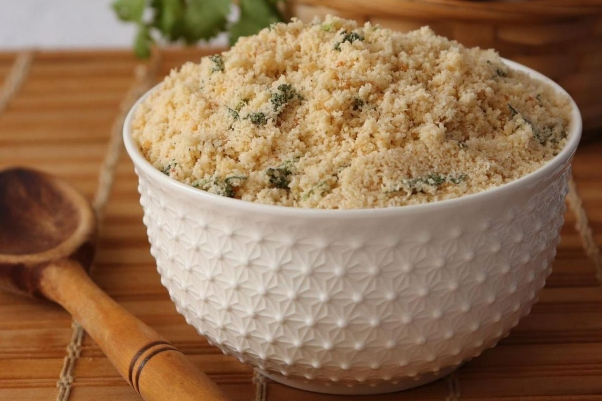
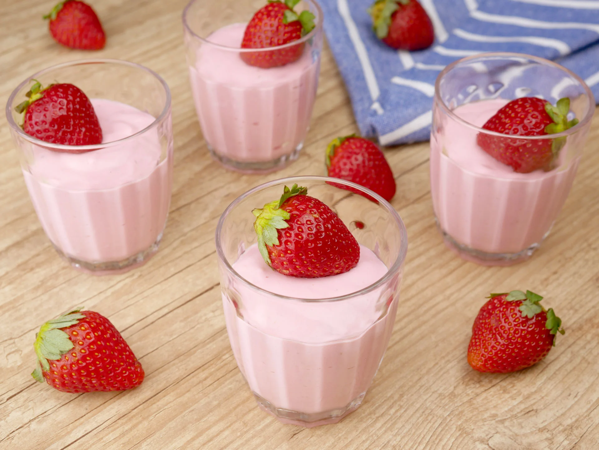

Home
Receitas
Cadastro
Feijoada
1 Kg de feijão preto cozido
200g de carne seca
200g de costelinha
200g de paio
2 cebolas grandes
Refogue as carnes com a cebola em uma panela de pressão até que esteja tudo bem dourado, acrescente sal e ervas a gosto, misture bem e acrescente o feijão cozido. Após 20min na pressão, está pronto para servir.

Farofa
1 Kg de farinha de mandioca
200g de linguiça calabresa
1 cebola grande
5 dentes de alho
100g de manteiga
Refogue primeiro a calabresa e a cebola, quando ja estiverem dourando, junte o alho e espere dourar. Acrescente a farinha e mexa bem até que mude de cor. acrescente a manteiga e sal a gosto misture tudo até que fique no ponto que mais lhe agrade

Danoninho Caseiro
1 lata de leite condensado
2 latas de creme de leite
1 pacote de suco em pó sabor morango
Morangos (opcional)
Bata o creme de leite, leite condensado e o suco no liquidificador até obter uma mistura homogênea. Sirva em potinhos de sua preferência, e se quiser decore com morangos por cima. Leve a geladeira por 1h.